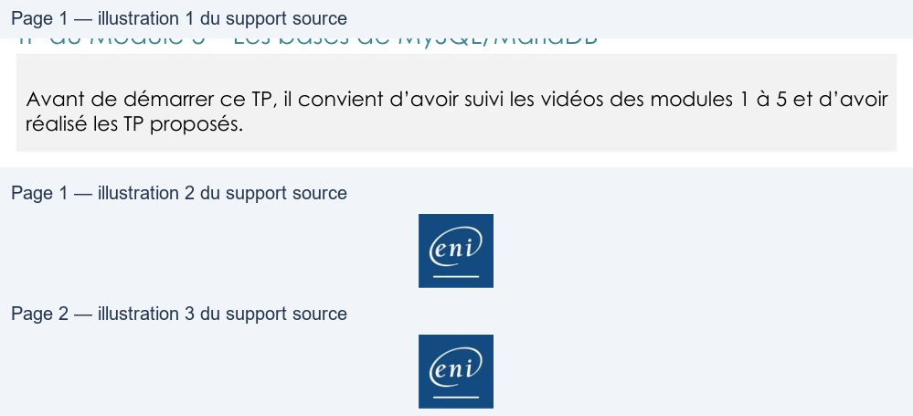

Transcription du document du Drive TSSR. La mise en forme est adaptée au Web ; les compléments IA du portail sont présentés séparément.
GLPI
TP du Module 5 – Les bases de MySQL/MariaDB
Avant de démarrer ce TP, il convient d’avoir suivi les vidéos des modules 1 à 5 et d’avoir
réalisé les TP proposés.
Objectifs
•
Comprendre le fonctionnement des requêtes MySQL.
Prérequis
•
Avoir fini les TP des modules précédents.
Contexte :
•
Vous gérez l’application GLPI au sein du domaine de la société Olympus depuis quelque
temps et votre DSI vous demande des informations à extraire dans la base de données
directement.
Principales tâches à réaliser
Connexion à la base de données en ligne de commande de votre serveur GLPI
• Connectez-vous en Shell à votre base de données de GLPI avec le compte root que vous avez configuré lorsque vous avez effectué la commande mysql_secure_installation.
•
Affichez toutes les bases de données présentes dans votre serveur MariaDB.
•
Connectez-vous à la base de données glpidata puis affichez toutes les tables présentes.
•
Affichez tous les attributs de la table des calendriers.
•
Affichez les noms et prénoms des utilisateurs de GLPI.
•
Affichez le nom des utilisateurs qui ont la langue en anglais (en_GB).
•
Affichez le nom et le nom complet des catégories de ticket qui sont enfants de.
o Indice : utiliser un comparateur.
•
Affichez le nom des switchs réseau qui ne sont pas des gabarits et qui sont liés au modèle
GAB-JL356A-ARUBA-2540-24P.
o Indices :
▪
Utiliser les sélections complexes.
▪
Is_template à 1 est un gabarit.
▪
GAB-JL356A-ARUBA-2540-24P est networkequipmentmodels_id à 2.
•
Comptez le nombre de SLMs et affichez en en-tête de colonne nb_de_SLMs.
Page 1/2
© ENI – Tous droits réservés
GLPI
o Indice : utiliser un alias.
•
Affichez le nom du switch avec le chiffre le plus haut qui utilise le modèle 24Ports.
o Indice : utiliser une fonction d’agrégation.
BONUS
•
Affichez le(s) nom(s) de la catégorie de ticket et le nom du gabarit de ticket qui est
utilisé pour une demande dans les catégories de ticket.
o Indice : utiliser une jointure interne.
BONUS
•
Comptez-les en affichant le nom du gabarit utilisé et le nombre avec comme en-tête
« nombre de catégories qui utilise un gabarit de demande ».
Une solution est proposée pour ce TP sous la forme d'un PDF commenté, disponible dans les
ressources à télécharger, accompagnée de captures d’écran pour vous guider.
Page 2/2
© ENI – Tous droits réservés
